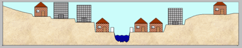
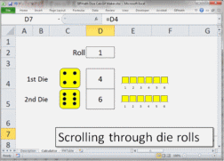
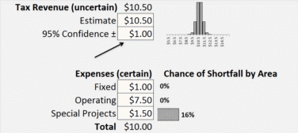
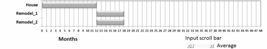

Companion Models to Published Articles and Presentations
The best way to learn about Probability Management is to explore interactively. NOTE: to experiment with the models below, you will need to Enable Content, if asked, and make sure that Excel is in Automatic Calculation mode.
Jordan Alen, Christine Cowsert Chapman, Melissa Kirmse, Farshad Miraftab, Sam L. Savage.

Operation Eagle Claw
Operation Eagle Claw was a failed special operations mission designed to rescue 52 Americans who had been taken hostage by Iranian revolutionaries in Tehran in November 1979. The Naval Postgraduate School uses it a case study in Flaw-of-Average based decision modeling. This is described in PowerPoint deck, and Helicopter.xlsx, which lets you experiment with the reliability and number of aircraft sent, then instantly simulates 10,000 missions to determine the chances of completion.
Article: Embracing the Uncertainty of the Iran Nuclear Deal
SIPmath™ Flood Model
By Sam Savage, August 2015.This is an active SIPmath™ simulation of the example in Figures 1.5 and 37.3 of Dr. Savage's book, The Flaw of Averages: Why we Underestimate Risk in the Face of Uncertainty. It demonstrates that the average damage from flooding is greater than the damage associated with the average crest.

Files from Probability Management in Financial Planning
By Sam Savage and Shayne Kavanagh, Government Finance Review Magazine, February 2014.These SIPmath™ models demonstrate the examples of scheduling, surplus and deficit, and reserves. The Dice calculator is available below.

Files from Dr. Savage's Stanford Webinar
The three SIPmath™ models included here demonstrate why so many things are Behind Schedule, Beyond Budget, and Below Projection. This is explained by the Flaw of Averages, a systematic set of errors that occur when single "average" estimates are substituted for uncertainties.SIPmath™ Dice Calculator
Here is a SIPmath™ calculator that simulates 10,000 rolls of a pair of dice before your finger leaves the 
Download model
Shortfall model
as described in The 'Sequestetron' by Sam Savage and Shayne Kavanaugh, Analytics Magazine, November/December 2013, and presented at the 107th annual meeting of the GFOA in San Francisco, June 2013. 
Download model
Cost vs. Risk in Defense Portfolios by Philip Fahringer and Sam Savage, Phalanx. (March 2012).
 Download model
Download model
The Flaw of Averages In Project Management in PMI Virtual Library, by Philip Fahringer, John Hinton, Marc Thibault and Sam Savage.(2011).
 Download modelFurther examples
The models below accompanied the original articles on Probability Management in OR/MS Today.They were created before the SIPmath standard, and were tedious to create, requiring thousands of formulas. You need to enable macros to access the clickable scatter plot in the first model.
Probability Management, Sam Savage, Stefan Scholtes & Daniel Zweidler, OR/MS Today, Part 1, February, 2006

Probability Management, Sam Savage, Stefan Scholtes & Daniel Zweidler, OR/MS Today, Part 2, February, 2006